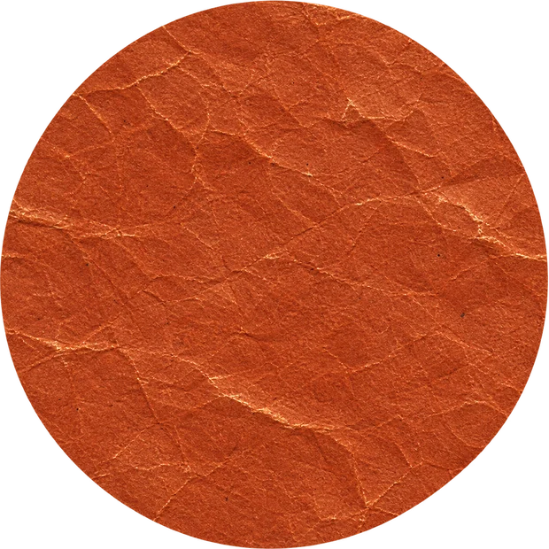
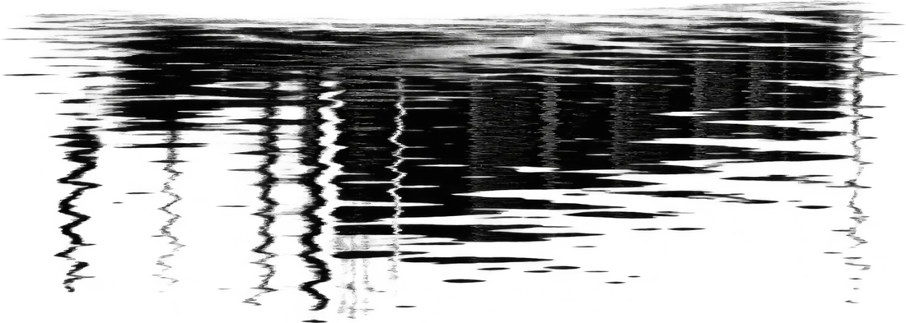
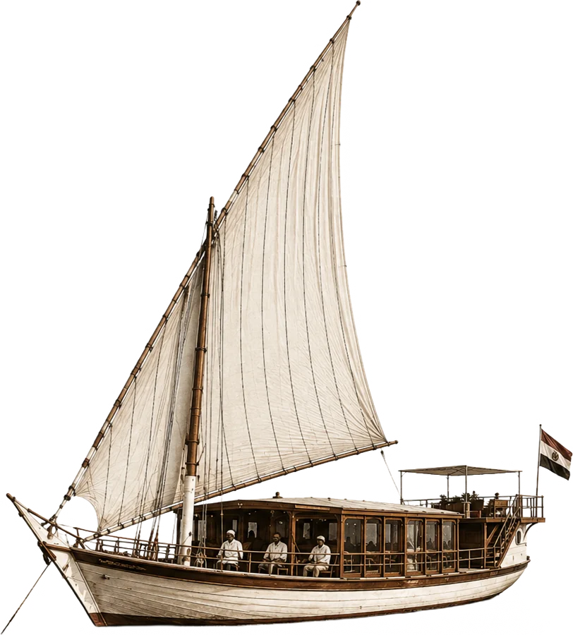
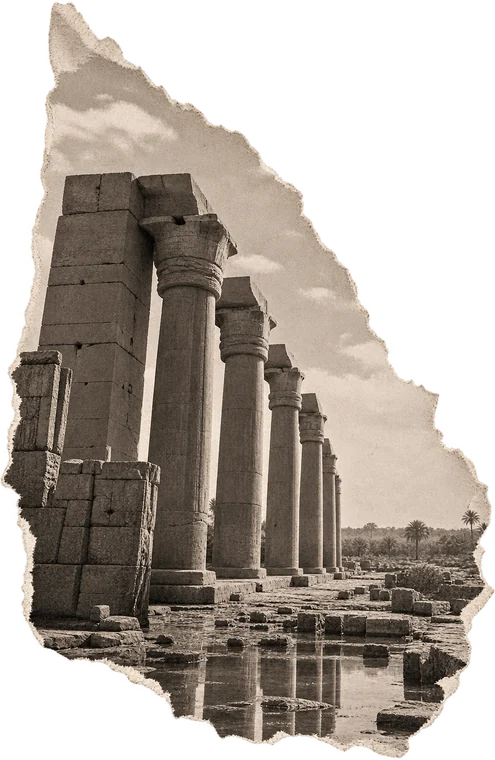
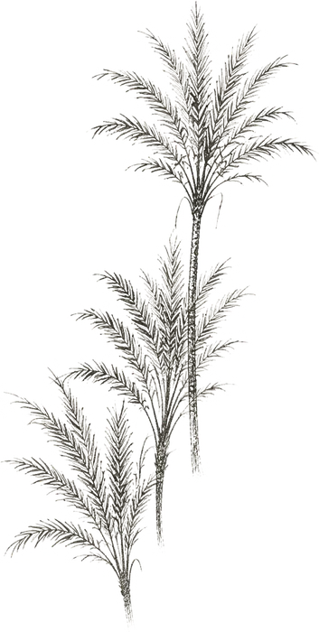
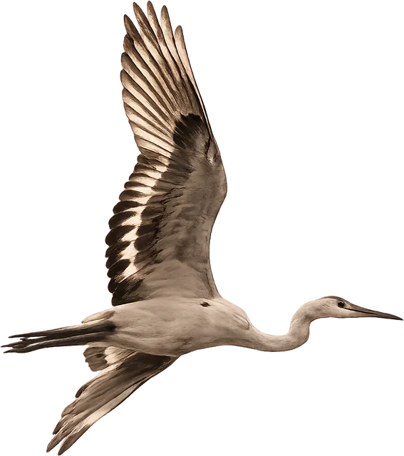
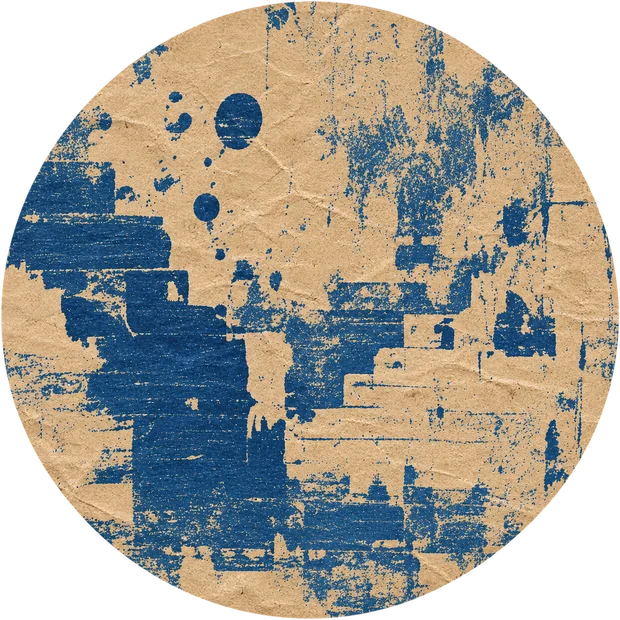

02 Journeys
The River.
The Journey.
The Connection.
Private sailings between Aswan and Esna, shaped by the river rather than by a fixed itinerary.
Explore journeys
on the Nile Winter 2027
03 Editions
Seasonal editions.
Artists on the Nile.
New perspectives.
Art, craft and changing collaborations that extend the collection beyond the boats themselves.
Discover editionsFrom source
to sea.
The Nile connects more than places.
It connects people, craft and stories.